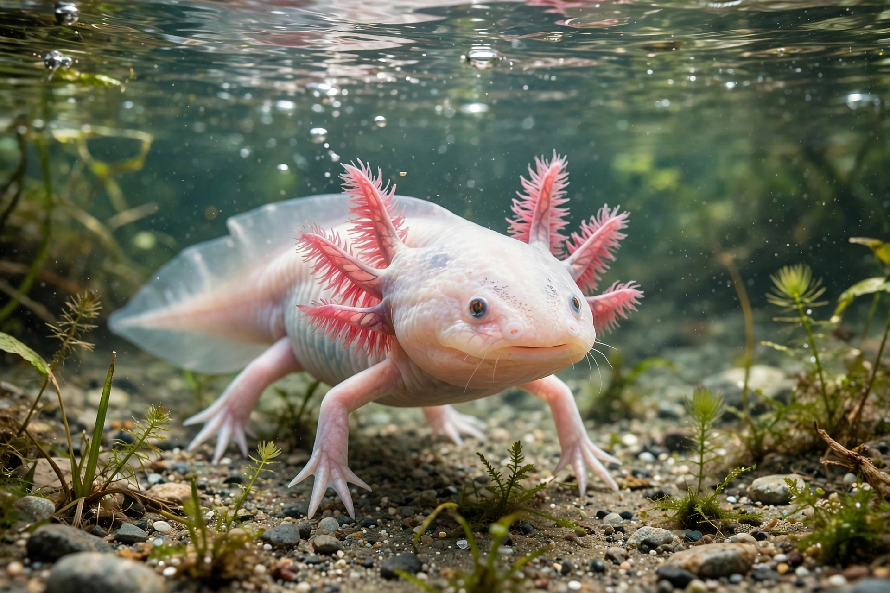

From Wikipedia, the free encyclopedia

Neoteny (from Greek νέος neos, "young", and τείνειν teínein, "to extend") is the retention of juvenile traits in the adult form of an organism, resulting from the slowing down or delay of somatic development relative to sexual maturation. It is one of the two ways by which paedomorphism can arise, the other being progenesis (accelerated sexual maturation).
The classic example is the axolotl (Ambystoma mexicanum), a salamander that normally reaches sexual maturity while retaining larval features such as external gills and an aquatic lifestyle; administering thyroid hormone can induce metamorphosis. Mudpuppies and olms are permanently neotenic. In insects, neotenic reproductives occur in termites and some beetles.
Humans exhibit numerous paedomorphic features compared with other primates — a large braincase, flat face, small jaws, and prolonged childhood — and Louis Bolk's "fetalization theory" proposed that human evolution was shaped by retention of juvenile ape traits. Neotenous features have also been discussed in relation to sexual selection and the domestication syndrome observed in domestic animals such as dogs.